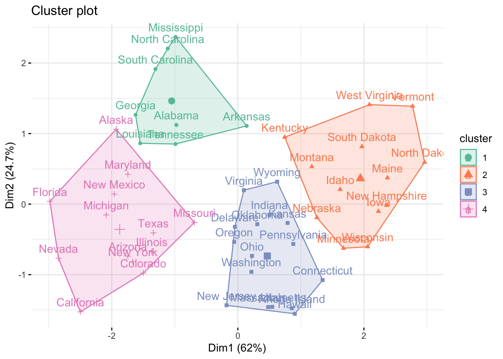
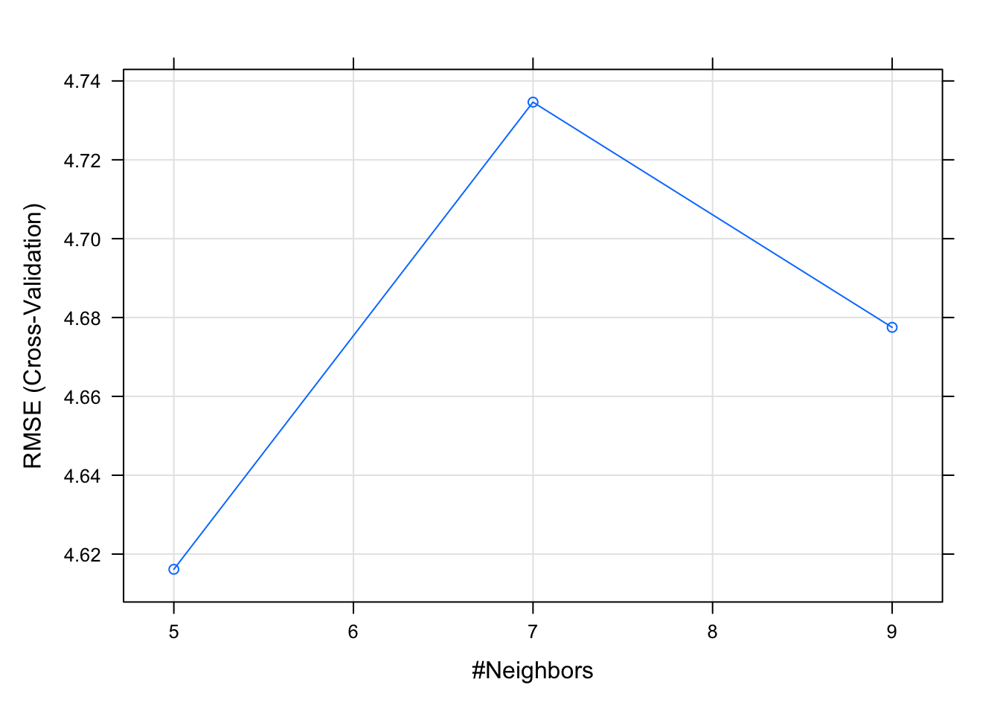
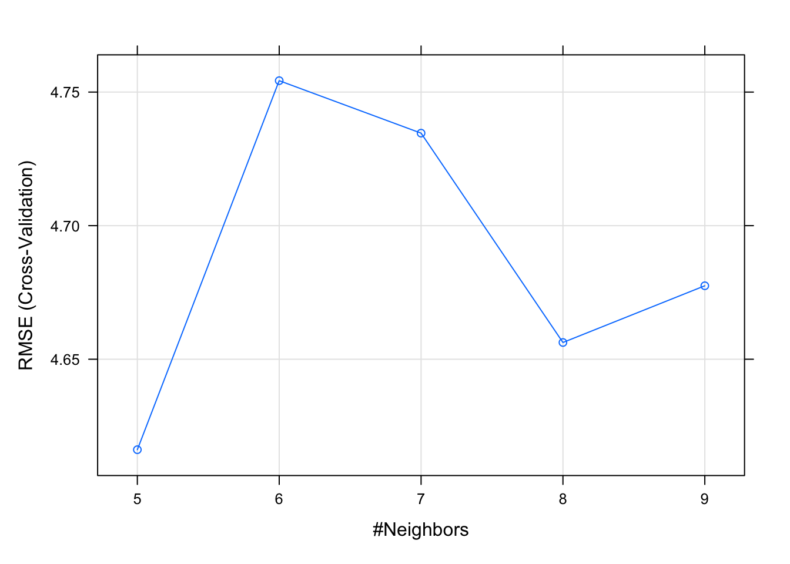

Chapter 4 kNN (k-Nearest Neighbors)
2021-12-22 updated
Ref: distance
Ref: tutorial
4.1 Difference calculating the distance: (1) Euclidean (2) Manhatten (3) Cosine (4) Jaccard Coefficient (5) MinKowski
# Euclidean distance
euclidean_distance <- function(a, b) {
# We check that they have the same number of observation
if (length(a) == length(b)) {
sqrt(sum((a-b)^2))
} else {
stop("Vectors must be of the same length")
}
}
euclidean_distance(1:10, 11:20)## [1] 31.62278# Manhattan distance
manhattan_distance <- function(a, b) {
# We check that they have the same number of observation
if (length(a) == length(b)) {
sum(abs(a-b))
} else {
stop("Vectors must be of the same length")
}
}
manhattan_distance(1:10, 11:20)## [1] 100# Cosine similarity
cos_similarity <- function(a, b) {
if (length(a) == length(b)) {
num = sum(a * b, na.rm = T)
den = sqrt(sum(a^2, na.rm = T)) * sqrt(sum(b^2, na.rm = T))
result = num/den
1 - result # because cos(0)=1
} else {
stop (1:10, 11:20)
}
}
cos_similarity(1:10, 11:20)## [1] 0.0440877# measure the degree of similarity of two vectors
# all values are equal = 1
# all values are different = 0
jaccard <- function(a, b) {
if (length(a) == length(b)) {
intersection <- length(intersect(a,b))
union <- length(a) + length(b) - intersection
intersection/union
} else {
stop("Vectors must be of the same length")
}
}
jaccard(1:10, 11:20)## [1] 0minkowski_distance <- function(a, b, p) {
# p=1, Manhattan distance
# p=2, Euclidean distance
if (p <= 0) {
stop("p must be higher than 0")
}
if (length(a) == length(b)) {
sum(abs(a-b)^p)^(1/p)
} else {
stop("Vectors must be of the same length")
}
}
(minkowski_distance(1:10, 11:20, 1))## [1] 100(minkowski_distance(1:10, 11:20, 2))## [1] 31.62278We need to based on the type of data, the dimensions, and the business objective to decide which method we are going to use. For example, Manhattan is good for the closet route that a taxi must take.
4.2 Find the k nearest neighbors
The process includes: (1) Check the number of observations is the same (2) Calculate distance (3) Find the closest neighbors. In the following, we use Boston house price data to demo KNN:
library(MASS)
data(Boston)
str(Boston)## 'data.frame': 506 obs. of 14 variables:
## $ crim : num 0.00632 0.02731 0.02729 0.03237 0.06905 ...
## $ zn : num 18 0 0 0 0 0 12.5 12.5 12.5 12.5 ...
## $ indus : num 2.31 7.07 7.07 2.18 2.18 2.18 7.87 7.87 7.87 7.87 ...
## $ chas : int 0 0 0 0 0 0 0 0 0 0 ...
## $ nox : num 0.538 0.469 0.469 0.458 0.458 0.458 0.524 0.524 0.524 0.524 ...
## $ rm : num 6.58 6.42 7.18 7 7.15 ...
## $ age : num 65.2 78.9 61.1 45.8 54.2 58.7 66.6 96.1 100 85.9 ...
## $ dis : num 4.09 4.97 4.97 6.06 6.06 ...
## $ rad : int 1 2 2 3 3 3 5 5 5 5 ...
## $ tax : num 296 242 242 222 222 222 311 311 311 311 ...
## $ ptratio: num 15.3 17.8 17.8 18.7 18.7 18.7 15.2 15.2 15.2 15.2 ...
## $ black : num 397 397 393 395 397 ...
## $ lstat : num 4.98 9.14 4.03 2.94 5.33 ...
## $ medv : num 24 21.6 34.7 33.4 36.2 28.7 22.9 27.1 16.5 18.9 ...library(caret)
set.seed(1)
model <- train(
medv ~ .,
data = Boston,
method = "knn"
)
model## k-Nearest Neighbors
##
## 506 samples
## 13 predictor
##
## No pre-processing
## Resampling: Bootstrapped (25 reps)
## Summary of sample sizes: 506, 506, 506, 506, 506, 506, ...
## Resampling results across tuning parameters:
##
## k RMSE Rsquared MAE
## 5 6.774213 0.4788519 4.616781
## 7 6.709875 0.4771239 4.635036
## 9 6.746559 0.4654866 4.690258
##
## RMSE was used to select the optimal model using
## the smallest value.
## The final value used for the model was k = 7.plot(model)
Caret provide preprocessing method before we run our data.
set.seed(1)
model2 <- train(
medv ~ .,
data = Boston,
method = "knn",
preProcess = c("center", "scale")
)
model2## k-Nearest Neighbors
##
## 506 samples
## 13 predictor
##
## Pre-processing: centered (13), scaled (13)
## Resampling: Bootstrapped (25 reps)
## Summary of sample sizes: 506, 506, 506, 506, 506, 506, ...
## Resampling results across tuning parameters:
##
## k RMSE Rsquared MAE
## 5 4.827696 0.7297751 3.048151
## 7 4.793191 0.7373525 3.043650
## 9 4.788986 0.7410578 3.070081
##
## RMSE was used to select the optimal model using
## the smallest value.
## The final value used for the model was k = 9.Splitting the dataset (prevent overfitting)
set.seed(1)
inTraining <- createDataPartition(Boston$medv, p = .80, list = FALSE)
training <- Boston[inTraining, ]
testing <- Boston[-inTraining, ]
model3 <- train(
medv ~.,
data = training,
method = "knn",
preProcess = c("center", "scale")
)
model3## k-Nearest Neighbors
##
## 407 samples
## 13 predictor
##
## Pre-processing: centered (13), scaled (13)
## Resampling: Bootstrapped (25 reps)
## Summary of sample sizes: 407, 407, 407, 407, 407, 407, ...
## Resampling results across tuning parameters:
##
## k RMSE Rsquared MAE
## 5 4.948949 0.7111926 3.228177
## 7 5.008726 0.7072326 3.240362
## 9 5.049853 0.7042396 3.281286
##
## RMSE was used to select the optimal model using
## the smallest value.
## The final value used for the model was k = 5.See the performance of our model
test.features <- subset(testing, select=-c(medv))
test.target <- subset(testing, select=medv)[,1]
predictions = predict(model3, newdata = test.features)
# RMSE
(sqrt(mean((test.target - predictions)^2)))## [1] 4.563839# R squared
(cor(test.target, predictions) ^ 2 )## [1] 0.7814887Cross validation
set.seed(1)
ctrl <- trainControl(
method = "cv",
number = 10
)
model4 <- train(
medv ~ .,
data = training,
method = "knn",
preProcess = c("center", "scale"),
trControl = ctrl
)
(model4)## k-Nearest Neighbors
##
## 407 samples
## 13 predictor
##
## Pre-processing: centered (13), scaled (13)
## Resampling: Cross-Validated (10 fold)
## Summary of sample sizes: 367, 366, 367, 366, 365, 367, ...
## Resampling results across tuning parameters:
##
## k RMSE Rsquared MAE
## 5 4.616138 0.7518673 3.064657
## 7 4.734625 0.7404093 3.151517
## 9 4.677503 0.7508160 3.156651
##
## RMSE was used to select the optimal model using
## the smallest value.
## The final value used for the model was k = 5.plot(model4)
# To see if model4 is better than model3
test.features <- subset(testing, select=-c(medv))
test.target <- subset(testing, select=medv)[,1]
predictions = predict(model4, newdata = test.features)
# RMSE
(sqrt(mean((test.target - predictions)^2)))## [1] 4.563839# R squared
(cor(test.target, predictions) ^ 2 )## [1] 0.7814887We use lambda to tune the hyper parameters
set.seed(1)
tuneGrid <- expand.grid(
k = seq(5, 9, by = 1)
)
model5 <- train(
medv ~.,
data = training,
method = "knn",
preProcess = c("center", "scale"),
trControl = ctrl,
tuneGrid = tuneGrid
)
(model5)## k-Nearest Neighbors
##
## 407 samples
## 13 predictor
##
## Pre-processing: centered (13), scaled (13)
## Resampling: Cross-Validated (10 fold)
## Summary of sample sizes: 367, 366, 367, 366, 365, 367, ...
## Resampling results across tuning parameters:
##
## k RMSE Rsquared MAE
## 5 4.616138 0.7518673 3.064657
## 6 4.754269 0.7386282 3.162237
## 7 4.734625 0.7404093 3.151517
## 8 4.656271 0.7508317 3.133727
## 9 4.677503 0.7508160 3.156651
##
## RMSE was used to select the optimal model using
## the smallest value.
## The final value used for the model was k = 5.plot(model5)